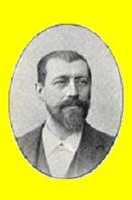
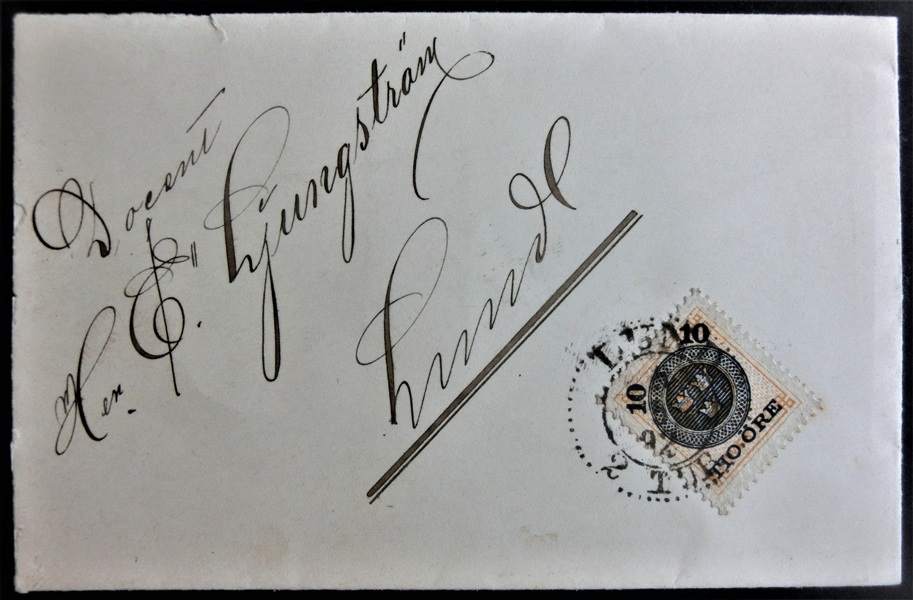

Svenskt porträttgalleri, XI. (1896)
26/12 1854 - 27/12 1943
Ernst Ljungström, bördig från Ystad, var botanist och blev fil. dr och docent vid Lunds universitet 1883. Botaniken förde honom ut i världen. Han var Battramsk stipendiat till Tyskland för botaniska studier i Strassburg och München 1883-84. Han gifte sig två gånger. Första gången 1886 med Amalie Emilie Julie Marie Hobelmann, med vilken han fick dottern Dagny Laura Erna Maria (f. 23 april 1893) och andra gången 1900 med Constance Flensburg. Han utgav arbeten i floristik, blommbiologi, mykologi och anatomi, såsom Bladets byggnad inom familjen Ericineae, I Ericae (1883). Han refererade nordisk botanisk litteratur i Botanischer Jahresbericht (utkommen 1881-95). 1903 blev han t. f. professor vid Lunds universitet. Tiden som professor blev dock kortvarig, eftersom han samma år erhöll sökt avsked. Han var hedersledamot av Lunds Botaniska Förening. Under flera år var han ledamot av Lunds stads fattigvårdsstyrelse.
Ernst Ljungström var tillsammans med kamrer Jonas Johnsson initiativtagare till att grunda en förening för filatelister, som under namnet Lunds Filatelistförening kom att se dagens ljus den 21 november 1889. Ernst Ljungström blev föreningens förste ordförande. Under hans ledning anordnades det första Allmänna Nordiska Filatelistmötet i Lund den 16 - 18 juni 1893 med ett 40-tal deltagare. Han var vid den tiden också medlem i Frimärkssamlarföreningen i Stockholm. Tillsammans med dess medlem F. W. Andrén publicerade Ernst Ljungström i början av 1890-talet flera artiklar om de svenska nytrycken. Posten som ordförande i Lunds Filatelistförening innehade han t. o. m. 1902.
Ernst Ljungström lämnade Lund och flyttade till Stockholm, där han blev medarbetare i Stockholms Dagblad 1903 och chef för dess korrekturavdelning 1908. Han var anställd i tidningens redaktion fr. o. m. 16 /8 1908 t. o. m. 1 /3 1928. Efter flytten till Stockholm blev han medlem i Uppsala Filatelistförening. 1933 blev han fil. jub. dr vid Lunds universitet.
Botanik och filateli var bara två av Ernst Ljungströms intressen här i livet. Han utgav kompositioner såsom Bondetågsmarschen (1914; text av Maria Fahlberg) och Sång till Sverige (1915; text av B. Malmberg). Han gjorde många årliga resor, delvis för botaniska studier, till Norge, Danmark, Finland, Tyskland, Österrike och Frankrike. Han var medlem av Frimurareorden.

Källor
Lunds Filatelistförening 1889 - 1989, Billgren, J., Norborg, K., Winther, T., Bloms boktryckeri, Lund 1989
Rättelser: På sidan 4 står det kamrer Jonas Johansson. Vid läsning av mötesprotokollet från den 13 november 1889
har det nu (2014) framkommit, att efternamnet ska vara Johnsson (utan a). På sidan 5 (under Vice ordförande) ska det stå Jonas Johnsson (inte Jonas Jonsson).
Publicistklubbens porträttartikel 1936, utgiven av Waldemar von Sydow, Publicistklubbens förlag, Stockholm, utgiven (enligt förordet) december 1935
Projekt Runebergs digitala faksimilutgåva av detta verk finns på
http://runeberg.org/pk/1936.
Stockholms Filatelist Förenings hemsida
Hemsidans adress är
http://sff.nu/stockholm.
Svenskt porträttgalleri, XI, Universiteten, Karolinska institutet samt Stockholms och Göteborgs högskolor,
Hildebrand, A. (huvudredaktör) och Odén, K. G. (biografier), Hasse W. Tullbergs förlag, Stockholm 1896
Projekt Runebergs digitala faksimilutgåva av detta verk finns på
http://runeberg.org/sbh/xi.
Svensk uppslagsbok, andra omarbetade och utvidgade upplagan, band 18 (biografi av fil. lic. Arne Hässler), Förlagshuset Norden AB, Malmö 1951
Lästips
Billgren, J., Sveriges första storsamlare - Ernst Ljungström, sid. 9 - 22 i Postryttaren 2015 (årsbok för Postmusei Vänner 2015), ISSN 0586 - 6758
Rättelse: På sidan 13 ska det stå §. Fil. stud. Fredrik Hjelmérus [inte Helméрус].